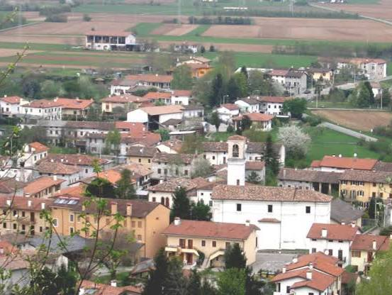
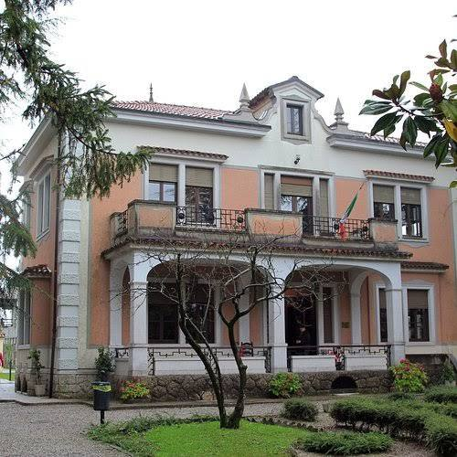
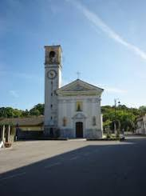
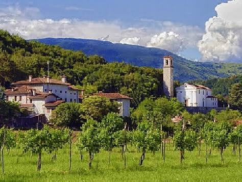
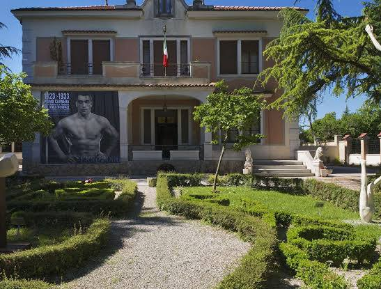
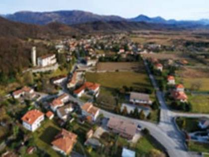
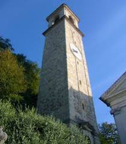

Conversation 43
Sequals Commune Information
Prompt 1 · You
sequals
Response 1 · Google AI Mode







"Sequals" most commonly refers to Sequals, a historic commune (municipality) located in the province of Pordenone within the northeastern Italian region of Friuli-Venezia Giulia.  Wikipedia
Wikipedia
WikipediaAlternatively, if you meant "sequels" (with an "e"), it is the plural form of a literary, cinematic, or televised work that continues a narrative from a previous piece.
Merriam-Webster
🇮🇹 The Italian Commune: Sequals
Sequals is a quiet, picturesque town of roughly 2,100 residents. It is particularly famous for its rich connection to arts, sports, and regional gastronomy: Wikipedia +1
Wikipedia +1- The Mosaic Tradition: Sequals is renowned for producing world-class mosaic and terrazzo artists who traveled globally. Most notably, it was the birthplace of Giandomenico Facchina (1826–1903), the artist who revolutionized mosaic techniques and decorated landmarks like the Opéra Garnier in Paris. Wikipedia
- Primo Carnera: The town was home to Primo Carnera (1906–1967), the iconic heavyweight boxing champion of the world ("The Ambling Alp"). Visitors today frequently tour Villa Carnera, his beautifully preserved 1930s-era family home. Comune di Sequals +2
- Local Attractions: Beyond the villa, the area features local vineyards, the ancient ruins of the Castello di Solimbergo, and distinct regional cuisine such as Blecs (a traditional buckwheat-cornmeal pasta). Tripadvisor +1
🎬 The Media Term: Sequels (Misspelling)
If you are looking for information regarding media continuations, the correct spelling is sequel / sequels.
Merriam-Webster
- Definition: A creative work that expands upon the timeline or story of a preceding original work.
- Examples: Famous cinematic follow-ups include The Godfather Part II, Terminator 2: Judgment Day, or Toy Story 3. Merriam-Webster +1
Are you researching the Italian town of Sequals (perhaps looking for travel tips or history), or were you looking for information regarding movie, book, or video game sequels?
Source links preserved from this response
- en.wikipedia.org
https://en.wikipedia.org/wiki/Sequals - www.merriam-webster.com
https://www.merriam-webster.com/dictionary/sequel - nl.wikipedia.org
https://nl.wikipedia.org/wiki/Sequals - www.comune.sequals.pn.it
https://www.comune.sequals.pn.it/ - www.tripadvisor.com
https://www.tripadvisor.com/Attractions-g1600478-Activities-Sequals_Province_of_Pordenone_Friuli_Venezia_Giulia.html